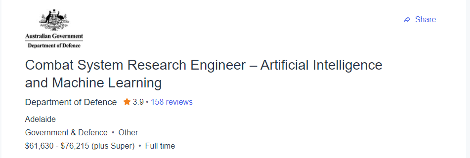
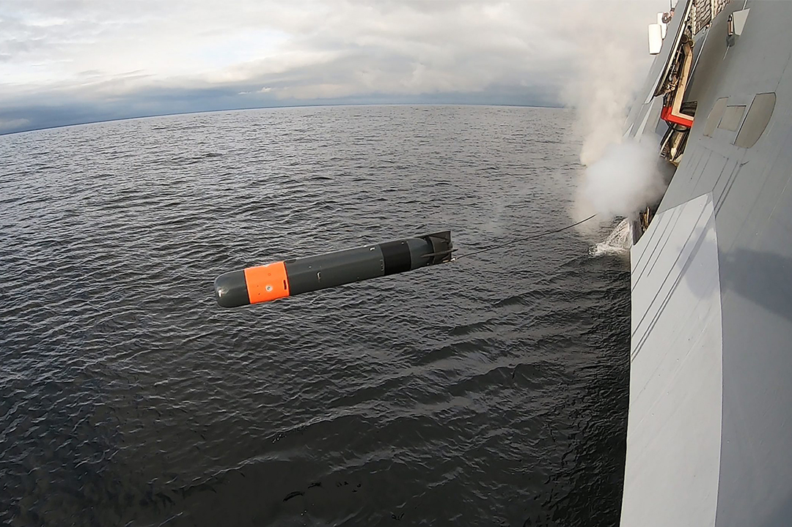

hello everyone welcome to my website! be sure to check out My instagram and my youtube page
My ideal job is working as a machine learning technician for the ministery of defence LINK HERE

This job is about developing and training artificial intelligence using machine learning. the job is for ‘defence’ technologies for the australian department of defence. The job is obviously very secretive about the exact nature of the projects that you would be working on specifically but it does mention that the position would be specifically focusing on naval warfare, presumably in a defensive context rather than offensive (hopefully)
I am super interested in Machine learning and artificial intelligence so this job was automatically appealing to me, i am also interested in the software behind many of the instruments of war and the navy has some pretty interesting examples of this eg heat seeking torpedos and SAM batteries
According to the application form the ideal applicant would have skills in all of the following fields and experience in at least one of them:
I currently have no skills nor experience in any of these fields.
I will likely have to finish my uni course with a focus on machine learning or artificial intelligence, and then get a job in that field to gain experience. Alternatively I could also gain experience in these fields through work experience at a place that works in those fields. Either way I would need to ensure that my education also covers all the fields I require experience in.
pictured below navy sam turret (left (credit seaforces.org) and a torpedo (right (credit navynews.com))
